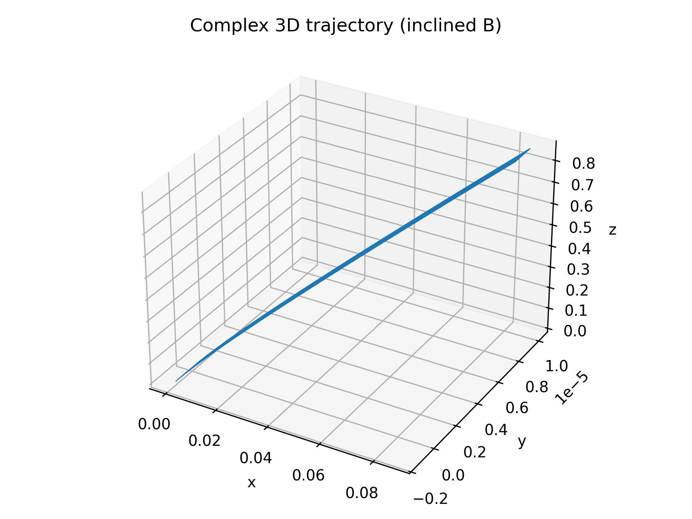

Problem 1: Simulating the Effects of the Lorentz Force
Motivation
The Lorentz force, expressed as F = qE + q(v × B), governs the motion of charged particles in electric and magnetic fields. It plays a central role in plasma physics, mass spectrometry, particle accelerators, and astrophysics. Through simulation, we can visualize particle dynamics and build intuition about how they behave in various field configurations.
Task Overview
-
Explore Applications
-
Particle accelerators
- Mass spectrometers
- Plasma confinement
-
Magnetic traps
-
Simulate Particle Motion
-
Under a uniform magnetic field
- Under combined electric and magnetic fields
-
Under crossed electric and magnetic fields
-
Parameter Exploration
-
Electric and magnetic field strengths
- Initial velocity
-
Charge and mass (q = 1 C, m = 1 g = 0.001 kg)
-
Visualize
-
Circular trajectory
- Spiral in z-direction
- Complex or drift motion
- Include labeled 2D/3D plots
Lorentz Force Simulation: Circular Motion
Introduction
In a uniform magnetic field with no electric field, the Lorentz force reduces to:
F = q (v × B)
This results in circular motion in the x-y plane as the force is always perpendicular to the velocity.
Parameters
- Charge (q): 1 C
- Mass (m): 0.001 kg
- Magnetic Field (B): [0, 0, 1] T
- Initial Velocity: [1, 0, 0] m/s
Output
 Figure: Particle follows a circular path in the x-y plane.
Figure: Particle follows a circular path in the x-y plane.
Lorentz Force Simulation: Helical (Spiral) Motion
Introduction
Adding a z-component to the initial velocity causes the particle to move forward while rotating, forming a helical (spiral) trajectory.
Parameters
- Charge (q): 1 C
- Mass (m): 0.001 kg
- Magnetic Field (B): [0, 0, 1] T
- Initial Velocity: [1, 0, 0.5] m/s
Output
 Figure: Helical motion caused by a velocity component along the magnetic field.
Figure: Helical motion caused by a velocity component along the magnetic field.
Lorentz Force Simulation: Drift Motion (E × B)
Introduction
With a perpendicular electric field, the particle undergoes circular motion but also drifts in a straight direction, forming an E × B drift.
Parameters
- Electric Field (E): [1, 0, 0] V/m
- Magnetic Field (B): [0, 0, 1] T
- Charge (q): 1 C
- Mass (m): 0.001 kg
- Initial Velocity: [0, 1, 0] m/s
Output
 Figure: Drift motion in crossed electric and magnetic fields.
Figure: Drift motion in crossed electric and magnetic fields.
Complex 3D Trajectory (Inclined Fields with Boris Algorithm)
Description
This simulation uses the Boris algorithm to compute the motion of a charged particle under:
- A uniform electric field in the z-direction
- An inclined magnetic field with components in both x and z
This results in a complex drift trajectory due to the E × B interaction.
Parameters
- Charge (q): 1 C
- Mass (m): 0.001 kg
- Electric Field (E): [0, 0, 1000] V/m
- Magnetic Field (B): [0.1, 0, 1] T
- Initial Velocity: [1e5, 0, 0] m/s
Output
 Figure: 3D trajectory with electric and inclined magnetic fields.
Summary & Notes
- Circular motion results from a velocity perpendicular to the magnetic field.
- Helical motion arises when the velocity also has a component along the magnetic field.
- E × B drift appears when the electric and magnetic fields are perpendicular.
- The Boris algorithm provides stable motion simulation under combined fields.
- All simulations use classical (non-relativistic) physics.
📦 Deliverables
- Markdown report with simulations of Lorentz force scenarios
-
Embedded Python code and explanations for:
-
Circular motion
- Helical motion
- E × B drift
- Complex inclined field trajectory
-
Plots:
-
circular_motion_3D.png
- spiral_motion.png
- drift_motion.png
- complex_trajectory.png
🧩 Conclusion
The Lorentz force simulations demonstrate key aspects of particle motion in electromagnetic fields. Through different initial conditions and field setups, we observed:
- Circular trajectories in pure magnetic fields
- Helical motion from axial velocity components
- Net drift due to crossed electric and magnetic fields
- Complex 3D paths with inclined fields
These results mirror behaviors in real-world systems like mass spectrometers, plasma traps, and magnetic confinement devices, validating the predictive power of classical electromagnetism.